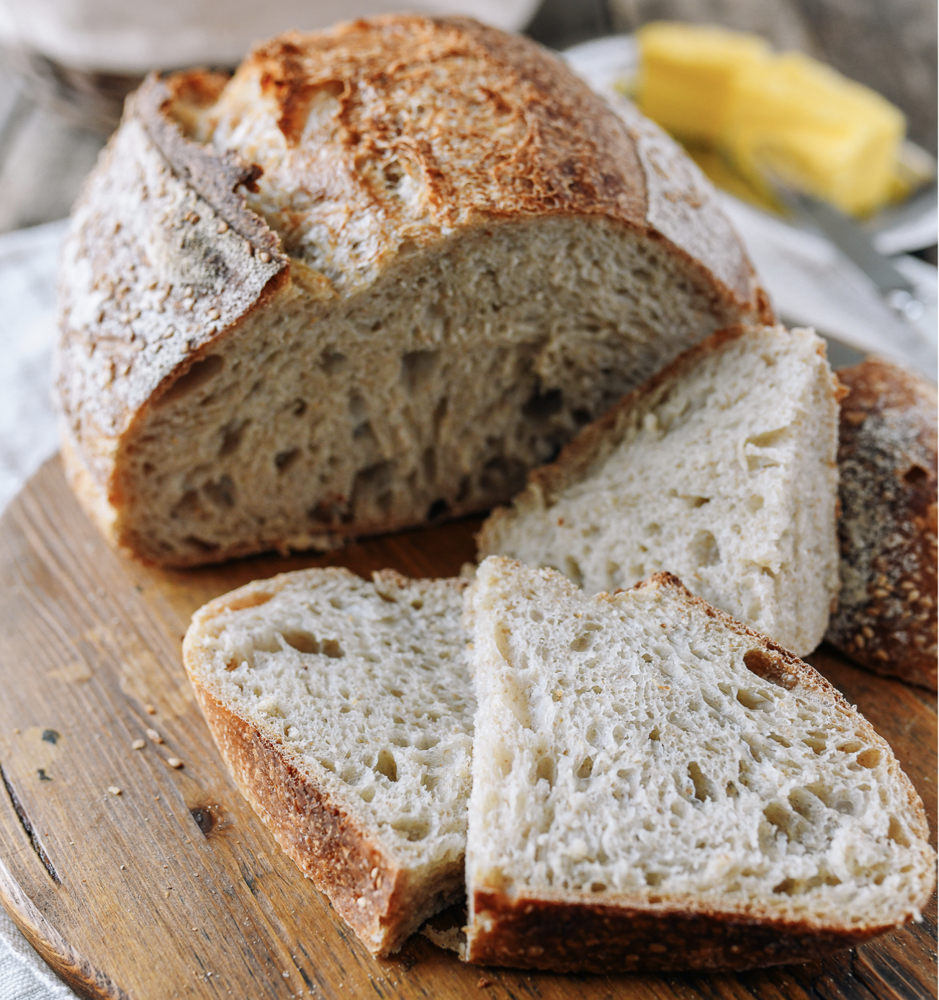
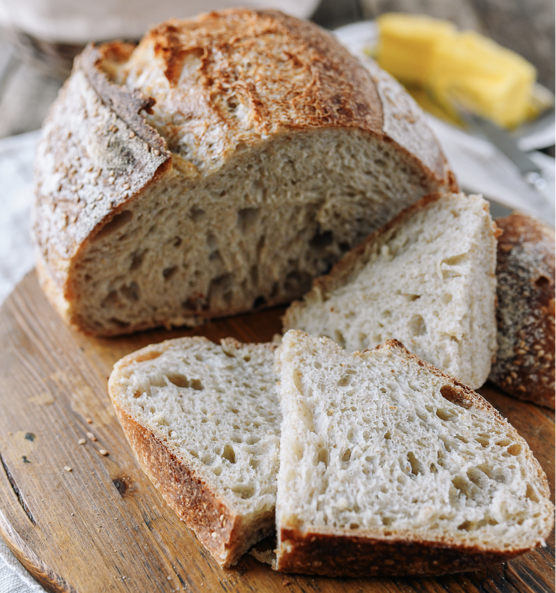
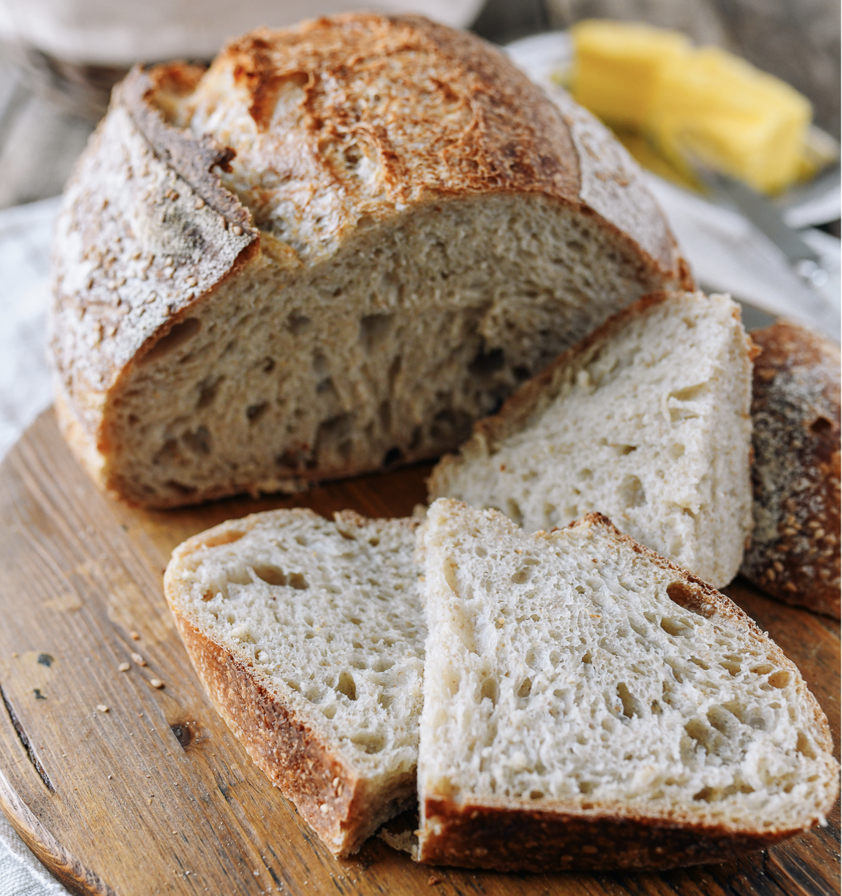
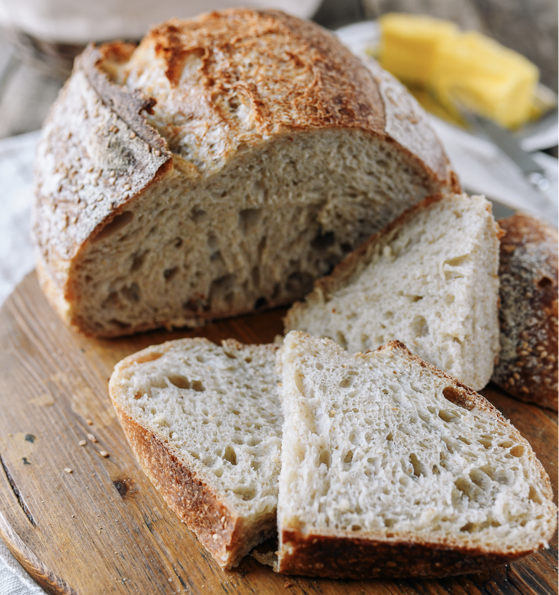

CookingClass() {
 



/* As a baker, I've always believed that chocolate chip cookies hold a special place in the world of baking. They're more than just a treat; they're a warm, comforting embrace in the form of a cookie. The scent of butter and vanilla, the satisfying crunch of a perfectly baked edge, and the gooey, melty pockets of chocolate that hide within each bite all combine to create a symphony of flavor and nostalgia. Chocolate chip cookies have the power to transport us back to our childhood, to simpler times when a freshly baked batch could cure any ailment, be it a bad day or a broken heart. They're a testament to the magic that happens when simple ingredients like flour, sugar, and chocolate come together, creating a timeless classic that brings smiles and happiness to all who savor them. */
/* Brisket! Who doesn't love a nice, juicy slice of Texas heaven. While I've only ever been to the Lone Star State once, when I was 6, I'm a big fan of the barbecue staple. I won't bore you with the history of brisket and Texas BBQ as a whole, but I will bore you with the reason I made one last weekend and why this recipe is literally the greatest that's ever been made. I've always loved brisket and BBQ as a whole, but I've been pretty scared to actually tackle it myself. I remember years ago, when my mom tried making it in an electric smoker and she ended up cutting all the fat off, making it inedible and extremely tough to chew (my mom is an amazing cook who is the entire reason I'm such a big fan of cooking). Before the past month or so, we've always made BBQ in an Instant Pot or in the oven, and smoking has always been kinda hard to do in our eyes. This all changed when my brother and I visited our cousin and her fiance in St. Louis this summer. We had a great BBQ and her fiance smoked up some truly amazing brisket on a tiny Weber Kettle charcoal grill. I thought you had to have a giant smoker made of old propane tanks and redneck engineering in order to have great BBQ, but I was wrong. This was some of the best brisket I'd ever eaten. This is what the zoomers would call a "Canon Event" because it changed the course of my life entirely. I meandered on about that beautiful day, wondering if I could ever try BBQ on my own. I remembered that we have an old kettle sitting in the basement (which was conveniently cleaned out because we're finishing it) and decided to give it a try. I bought a pork shoulder and made it on the old grill, realizing that it actually wasn't that hard to do 'low and slow' in the backyard. I made it another time before I decided that I was ready to conquer the almighty brisket. I woke up at 3am to start it, anticipating it to take all day, and low and behold, I made some really good brisket. (Please note that outdoor cooking and BBQ is pretty finicky to make consistently, so cooking times depend on a bunch of factors such as: outdoor temperature, size of the meat, humidity, time of day, etc.) */
/* Do you have an endless amount of freetime to solely dedicate to feeding a live culture? Do you have so much flour you don't know what to do with yourself? Then baking your own artisan-style sourdough is right for you! In the annals of culinary history, there exists a tale of bread that transcends time, dating back thousands of years to ancient Egypt. It's the story of sourdough bread—a time-honored tradition that has journeyed through centuries and across continents. The saga begins in the heart of the Nile, circa 1500 BC. In the shadow of the great pyramids, a baker named Tariq stumbled upon a discovery that would change the course of breadmaking. Mixing humble flour and water, he left the concoction exposed to the arid desert air. To his astonishment, the mixture fermented, yielding a loaf of bread unlike any that had graced his oven. What Tariq had unwittingly harnessed was a natural miracle: the alchemy of wild yeast and beneficial bacteria. These microorganisms, mainly lactobacillus and wild yeast strains, initiated the fermentation process that gave sourdough its unique character. The word "sourdough" itself didn't find its way into the English language until the 19th century, but the practice had ancient roots. From Egypt, it spread through the Mediterranean and the cultures of Greece and Rome. The art of sourdough baking became a revered tradition, and its secrets were passed down from one generation to the next. As history unfolded, sourdough bread was a mainstay in the diets of early American settlers. Its reliability in challenging conditions made it a valued companion on the arduous journey westward. During the California Gold Rush of the mid-19th century, miners and settlers relied on sourdough as a source of sustenance. In modern times, sourdough bread has experienced a renaissance. The artisanal bread movement, coupled with a growing appreciation for traditional and slow-fermentation methods, has brought sourdough back into the spotlight. It's no longer just a staple; it's a symbol of artistry and a connection to centuries-old practices. */
/*Pretzel bites are a delightful and highly addictive creation. These small, golden nuggets of joy hold an irresistible charm all their own. With their slightly crispy exterior and soft, warm center, they offer a textural experience that's nothing short of magical. There's something about the tantalizing aroma of freshly baked pretzel bites that stirs the senses and beckons you closer to the oven. These morsels of happiness, whether dusted with coarse salt or paired with a creamy dip, are a testament to the unique alchemy of baking. The way they effortlessly balance the interplay of salty and savory, crispy and tender, makes pretzel bites a snack worth celebrating. Each bite is a journey into comfort and flavor, reminding us that sometimes the simplest of creations can be the most extraordinary.*/
/* Every baker has a treasured recipe that holds a special place in their heart, and for me, that recipe is the Chocolate Bundt Cake. This delicious dessert is more than just a cake; it's a symbol of tradition, a repository of secrets, and a testament to the generations of bakers who have lovingly passed down this recipe from one skilled pair of hands to another. The origins of the Chocolate Bundt Cake date back to my great-grandmother, Betty, an avid baker who discovered the recipe in an old cookbook that once belonged to her own grandmother. Fueled by curiosity and armed with creativity, Matilda set out to make this recipe her own, ultimately giving birth to what we now know as the Chocolate Bundt Cake. Her secret ingredient was simple but profound – love. Each cake she baked was infused with the rich aroma of premium cocoa, and it was said that a single bite could transport you to a place where time stood still, and your troubles melted away. Over the generations, the recipe was passed down from mother to daughter, with each baker adding their unique touch while preserving the essence of Matilda's creation. My mother, Sophie, played a significant role in perfecting the recipe. She experimented with different types of chocolate and fine-tuned the baking process, creating the perfect texture and flavor. Sophie would often tell me that this cake had the power to heal a broken heart and mend a wounded soul. Now, I've taken up the mantle, determined to continue the tradition and share this delightful creation with the world. I believe that every Chocolate Bundt Cake I bake is not only a delicious dessert but also a connection to my family's past, a tribute to the art of baking, and a testament to the power of love. As you read this recipe, know that you're not just baking a cake; you're carrying on a legacy. The rich history and delicious flavors of the Chocolate Bundt Cake have been passed down through generations, and now, it's your turn to create this masterpiece with love and share it with your loved ones. Enjoy the journey, and may your Chocolate Bundt Cake bring joy and comfort to all who taste it. */